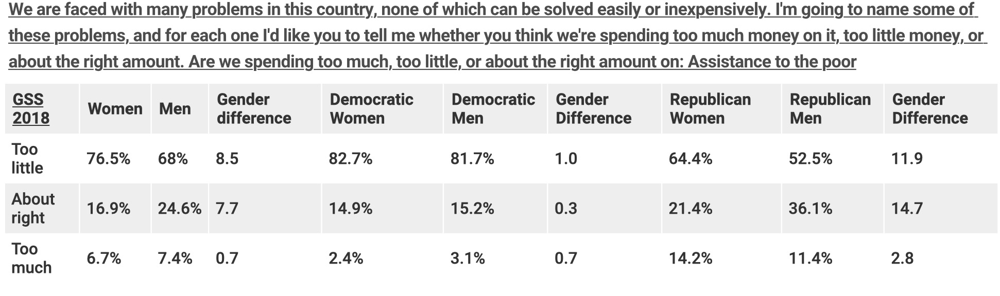
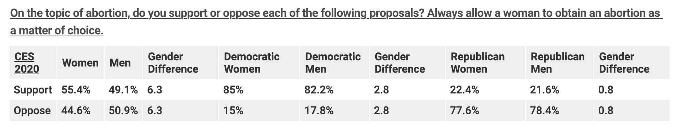
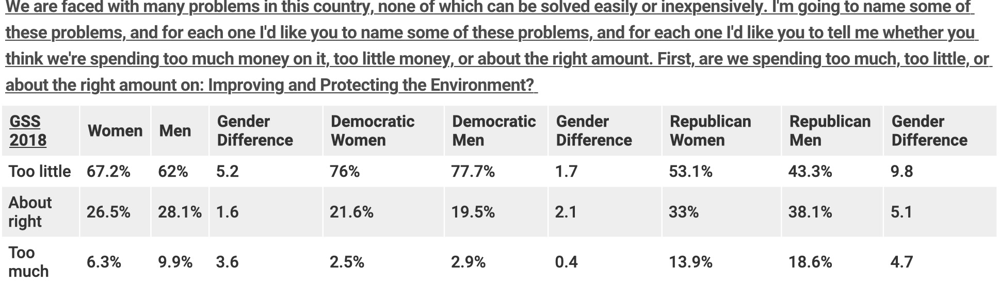
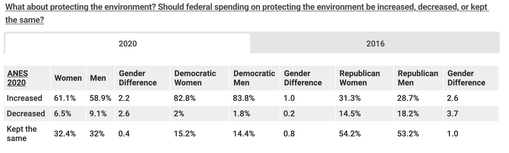

In Today’s world there remains a visible gender difference among society where women and men hold different attitudes and opinions in American Politics. There has been a long trajectory with the stereotypes of men and women in society as a whole. From women being normalized to like the color pink and men to be normalized from society to like the color blue. Where women have to act a certain way & guys another way. Where women are seen as too “emotional” and “liberal” and men seen as “aggressive.” Therefore these differences are long seen in society. Most Importantly, in the world of Politics Gender and opinion in policy issues illustrates the differences of who favors what and why. There being differences within welfare, abortion, and environmental rights.
A social welfare system offers help to individuals and families in need, with such programs as health care assistance, food stamps, and unemployment compensation. Lesser-known parts of a social welfare system include disaster relief and educational assistance. Women are more likely to support spending on health insurance when they do not have the resources and financial support. In the percentages Among Latinx Americans and Black, women are about five to eight percentage points more likely than men to support increased spending. However, in regards to the whites and Asian there is not much gender differences on support for increased health care spending.
Women are more supportive of access to abortion than men. According to the 2020 ANES data, women are about four percentage points more likely than men to support abortion as a matter of personal choice. Within Political Party and Gender differences, you can see that Democrats are more likely than Republicans to support abortion as a personal choice. According to 2020 ANES data, over 50% of women responded that they would be upset if the Supreme Court reduced abortion rights compared to about 43% of men.
According to the 2020 ANES, women are more likely than men to think we need much tougher regulations on business in order to protect the environment and they express more support than men for increasing federal spending on the environment. Democrats women and men rather than Republicans are more likely to support environmental regulation and increased federal spending.
 Race, Gender, and Politics come together when establishing Gender Differences. Women Involved in political offices want to establish policies that can benefit the society. But within Democratic Males and Republicans Male there is still a restriction and differences on public opinion. Women support causes of abortion to be a personal matter, support spending for assistance of the poor, and regulations for society, but it’s still not equal and can be attained because of the differences in politics gender. Although Republican Conservative views do not support causes as much as Democrats both political parties have differences within gender and race. It's important to understand how these gender differences in public opinion are creating an unbalanced system of choices.